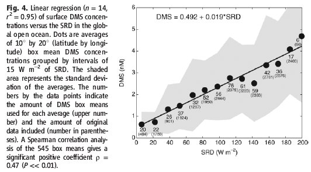
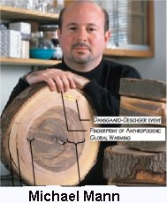

Cette chronique est en relation directe avec celle que vous avez peut-être lue sur le réchauffement climatique dans ce blog ainsi que celle qui concerne les ouragans, les planctons et les océans .
Il s’agit, cette fois-ci, de l’analyse d’un article récent paru dans la revue “Science” du 26 Janvier 2007. Je rappelle que la revue “Science” est une revue américaine du niveau de “Nature” dont le sérieux est incontestable. Cet article rend compte du travail de deux chercheurs catalans, Sergio M. Vallina et Rafaèl Simo de l'Institut des Sciences de la Mer de Barcelone en Espagne. Il est intitulé en anglais " Strong relationship between DMS (NDLR : Dimethylsulfid) and the solar radiation dose over global surface ocean".
Il constitue une excellente nouvelle pour ceux qui s'intéresse aux réactions des océans et notamment des biota (la biosphère) face au réchauffement climatique. Il constitue, sans aucun doute aussi, une aubaine pour ceux qui comme le Prof. Svensmark sont friands des composés soufrés destinés à l'ensemencement de la vapeur d'eau pour la convertir en bons gros nuages. Souvenez vous que les particules ionisantes venues de l'espace doivent rencontrer notamment des particules soufrées pour pouvoir fabriquer des nuages...
Jusqu'à présent les études publiées cherchaient à corréler, sans succès, la quantité des planctons que l'on mesure en étudiant le taux de chlorophylle et la quantité de gaz appelé Diméthyl sulfide (sulfure de dyméthyle, (CH3)2S) qui est le principal composé naturel et organique propre à créer, après oxydation naturelle en sulfates, des nuages obscurcissant le ciel. Agissant différemment, nos deux chercheurs catalan ont cherché s'il existait une corrélation entre la proportion de sulfure de diméthyle émis dans l'atmosphère au dessus de la surface des océans et l'ensoleillement (mesuré en Watt par m2) de cette même surface. Les études conduites aussi bien dans la partie nord ouest de la méditerranée que dans la mer des sargasses (particulièrement riche en planctons) montrent une relation linéaire entre la production de sulfure de diméthyle et le degré d'ensoleillement.
Ceci constitue une très bonne nouvelle car il s'agit d'une rétroaction négative. En bref, ces résultats montrent sans ambigüité que lorsque la mer reçoit un fort ensoleillement, les petits planctons se mettent au travail et la proportion de sulfure de diméthyle augmente ce qui est propice à la création de nuages destinés à diminuer l'ensoleillement. A noter que cette rétro-action est pratiquement instantanée puisqu'elle parvient à suivre les variations saisonnières. De ce fait, elle est particulièrement efficace. Cet effet de feedback négatif est, bien entendu, ignoré par les représentants du GIEC qui s'efforcent, avec beaucoup de difficultés, comme je vous l'ai expliqué abondamment ici, de tenir compte dans leurs calculs d'ordinateurs des réactions de la biomasse... dont ils ignorent presque tout pour l'instant. Voici donc une lacune comblée qui va permettre sans doute de remettre les prévisions de nos climatologistes sur une meilleure voie de succès que celle qui prévaut actuellement. Remarquons en passant que tout cela marche dans le même sens, exactement comme l'ont fait les planctons d'il y a 55 millions d'années qui ont évolué pour échapper aux rigueurs de l'acidification des eaux de mers, à cause d'une présence excessive de CO2 dans l'atmosphère, deux à trois fois supérieure à celle qui règne maintenant au dessus de nos têtes.
Vous trouverez dans ce lien une analyse bibliograhique (en anglais) de Sherwood, Keith and Craig Idso, sur cet intéressant phénomène de rétroaction planctonique.
Cette réaction des biota planctoniques qui évacuent du sulfure de diméthlyle propice à la lutte contre l'échauffement solaire est sans doute une nouvelle manifestation d'une des nombreuses astuces de la nature. Autorisez moi une légère digression. Dans un but purement pédagogique, je peux, à ce sujet, vous conter une autre histoire sans rapport avec les planctons, certes, mais qui montre à quel point la biomasse déborde d'ingéniosité lorsqu'il s'agit de se défendre contre les variations climatiques telles que les excès de sécheresse ou d'ensoleillement. Ma petite histoire concerne tout simplement un légume que tout le monde connaît bien et mange en vinaigrette sans se douter des trésors d'imagination déployés par cet innocent végétal de la famille des brassica.
Petite histoire des choux rouges qui se protègent du soleil et de la sécheresse
 De fait, tout le monde peut faire l'observation suivante pour peu que l'on dispose d'un ou de plusieurs choux rouges sur pied et .. d'un tuyau d'arrosage. L'expérience doit être menée obligatoirement en été par période de forte chaleur. Vous remarquerez aisément que, dans ces conditions, les choux rouges ne sont pas exactement rouges car ils sont recouverts d'une couche très mince d'un matériau légèrement blanchâtre qui lui donne un aspect un peu poussiéreux et un tantinet miroitant. Cette couche, très mince est d'ailleurs extrêmement fragile. Il suffit de la frotter légèrement avec les doigts pour qu'elle s'efface rendant au chou rouge sa couleur initiale. D'autre part, cette couche mince blanchâtre légèrement réfléchissante (comme cela se voir sur la photo ci-contre) qui recouvre les choux rouges en été se retrouve aussi sur les prunes rouges et sur les raisins noirs (beaucoup croient alors qu'il s'agit d'un dépôt de sulfate de cuivre dû aux traitements ! Erreur !). Ces trois végétaux se recouvrent en réalité, spontanément, d'une mince couche de pruine. Cette couche de pruine est très utile pour protéger nos végétaux contre un ensoleillement excessif fréquent pendant les canicules d'été. Comment cela ?
De fait, tout le monde peut faire l'observation suivante pour peu que l'on dispose d'un ou de plusieurs choux rouges sur pied et .. d'un tuyau d'arrosage. L'expérience doit être menée obligatoirement en été par période de forte chaleur. Vous remarquerez aisément que, dans ces conditions, les choux rouges ne sont pas exactement rouges car ils sont recouverts d'une couche très mince d'un matériau légèrement blanchâtre qui lui donne un aspect un peu poussiéreux et un tantinet miroitant. Cette couche, très mince est d'ailleurs extrêmement fragile. Il suffit de la frotter légèrement avec les doigts pour qu'elle s'efface rendant au chou rouge sa couleur initiale. D'autre part, cette couche mince blanchâtre légèrement réfléchissante (comme cela se voir sur la photo ci-contre) qui recouvre les choux rouges en été se retrouve aussi sur les prunes rouges et sur les raisins noirs (beaucoup croient alors qu'il s'agit d'un dépôt de sulfate de cuivre dû aux traitements ! Erreur !). Ces trois végétaux se recouvrent en réalité, spontanément, d'une mince couche de pruine. Cette couche de pruine est très utile pour protéger nos végétaux contre un ensoleillement excessif fréquent pendant les canicules d'été. Comment cela ?
Alors, avouez que la biomasse a plus d'un tour dans son sac quand il s'agit de se protéger des ardeurs de Phoebus ! Gardons confiance ! Les planctons et les choux rouges, les raisins et les prunes qui sont le résultat de millions d'années d'évolution de Darwin, savent y faire ! Ces plantes qui ont su résister à des périodes climatiques très variées au cours des âges ont démontré leur résistance. Tiens, mais au fait, les spécialistes des prédictions sur ordinateurs tant appréciés du GIEC n'ont sûrement pas pensé à la pruine de nos choux rouges, ni à l'effet Lotus ou Fakir, eux qui en rajoutent sur les rétroactions positives (et non pas négatives comme dans la réalité) pour alarmer l'opinion publique ! A mon avis, ces petits génies du clavier ne doivent pas être au courant !
26 Juin 2008 : En transpirant quand il fait chaud et en se recroquevillant quand il fait froid, les feuilles des arbres font tout pour résister aux variations de température afin de favoriser la photosynthèse. Rude coup porté à la dendrochronologie !
Comme vous le savez si vous avez suivi les avatars de la célèbre courbe en "crosse de hockey" de Michael Mann et al (1998) (ci-contre), qui était censée nous révéler l'évolution des températures depuis l'an mil... avec des résultats plutôt surprenants pour ne pas dire totalement erronés, la dendrochronologie, c'est à dire l'analyse des anneaux de de croissance des arbres, devait nous permettre de connaître la température (et l'humidité) qui a régné au cours des âges reculés. N'oubliez pas que la courbe de Mann, célèbre entre toutes, a servi d'argument N°1 pour les affirmations du réchauffement anthropogénique du GIEC de 1998 à 2007, au point de figurer plusieurs fois dans le même rapport...bien que de nombreuses études y aient débusqué de graves erreurs de méthodologie.
Je dis "devait" parce que cette méthode, pratiquée depuis des dizaines d'années, vient de prendre un sérieux coup de vieux. En effet, cette méthode repose sur un principe qui semblait acquis ( sans preuve formelle.. il faut être méfiant !) : "Les arbres vivent et croissent toujours à la température de l'air ambiant."
Ce principe -on devrait dire, cette hypothèse- se révèle absolument faux comme vient de le démontrer une équipe de deux chercheurs de l'Université de Penssylvanie (Brent Helliker et Suzanna Richter) dans un article publié dans la revue Nature (source).
Un extrait du résumé de cet article en dit plus long qu'un grand discours : " Nous avons utilisé une méthode nouvelle partant des variations du taux de l'isotope 018 de la cellulose de manière à étudier la température de la canopée (NDLR la cime des arbres) dans 39 espèces d'arbres. Nous trouvons une température des feuilles remarquablement constante de 21.4  2.2 °C sur une éventail de 50° en latitude, allant des végétations subtropicales (NDLR : Colombie sub-tropicale) aux boréales (NDLR : au Nord du Canada). Ceci signifie que lorsque l'assimilation du carbone est maximale (NDLR : cad lors de la photosynthèse), les propriétés physiologiques et morphologiques des branches d'arbres servent à augmenter la température au dessus de la température ambiante, de manière beaucoup plus accentuée dans les latitudes situées plus au Nord."
2.2 °C sur une éventail de 50° en latitude, allant des végétations subtropicales (NDLR : Colombie sub-tropicale) aux boréales (NDLR : au Nord du Canada). Ceci signifie que lorsque l'assimilation du carbone est maximale (NDLR : cad lors de la photosynthèse), les propriétés physiologiques et morphologiques des branches d'arbres servent à augmenter la température au dessus de la température ambiante, de manière beaucoup plus accentuée dans les latitudes situées plus au Nord."
En substance, cet article nous décrit un processus biophysique que personne ne semblait avoir imaginé jusqu'à présent, qui permet aux arbres d'optimiser le processus de photosynthèse; c'est à dire leur processus de croissance. Pour faire plus simple, lorsque la température est en dessus de 21,4 °C, les feuilles des arbres se mettent à transpirer, ce qui résulte, comme chacun sait, en une évaporation rafraîchissante. A l'opposé, lorsqu'il fait plus froid que la température requise pour l'optimum de photosynthèse, les feuilles se recroquevillent pour offrir moins de prise aux vents froids. On sait, par ailleurs que les arbres (dont certains grands arbres qui poussent en Australie comme cela est raconté par Jules Verne dans les enfants du capitaine Grant) ont la propriété de faire pivoter leurs feuilles parallèlement aux rayons du soleil pour réguler la photosynthèse.
Comme le dit un des auteurs de cet article retentissant : "Il n'est pas surprenant de penser qu'un ours polaire qui vit au Nord du Canada et un ours brun de Floride, conservent la même température corporelle, car ces animaux possèdent des thermostats internes qui les protègent contre les excès de chaleur ou les froids mortels. Mais penser qu'un épicéa noir du Canada et un pin des Caraïbes ont un feuillage à la même température moyenne, c'est tout à fait étonnant."
D'autres chercheurs, Suisses, cette fois-ci ont étudié, à l'aide de caméras infra rouges, la température de la canopée d'arbres de différentes espèces poussant dans les forêts Suisses. Moyennée sur toute une saison de croissance, la température moyenne de la canopée était de 4 à 5°C supérieure à celle de l'air froid environnant.
De tout cela, on peut tirer (au moins) deux conclusions et deux observations :